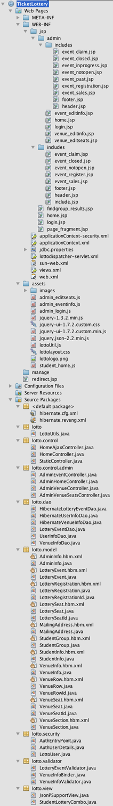

Implementation
At right: The full file listing for the Ticket Lottery application
The Ticket Lottery application is written primarily in Java, using a variety of frameworks to ease development and support the project's architecture goals. They include:
- Java Servlets, for interfacing with the user's Web browser
- Spring and Spring MVC, to implement the Model-View-Controller architecture
- Java Server Pages, for the view implementation
- Hibernate, an object-relational mapping framework that implements the model
- Spring Security, an addition to the Spring system that helps with user authentication and securing the interfaces from unauthorized access.
Parts of the application are written in JavaScript and run on the user's computer, under the Web browser. This reduces the number of requests the browser has to make to the server to get more information, which in turn provides the user with a faster and better experience. The jQuery JavaScript library is used heavily to help make the client-side operations reliable across a wide range of browsers.
Documentation
Documentation for users and administrators are included in the interfaces. No separate manuals are required.
Because of the specialized nature of the Ticket Lottery application, there is no clean-cut installation process. Roughly, it requires:
- Install a Java servlet container. While any container should work, the application is only tested on Apache Tomcat 6.
- Install a relational database system. Currently only MySQL with InnoDB is supported, though other databases could be supported with minor modifications.
- Create a database and user for the Ticket Lottery, and import the lottery_schema.sql file from the application's distribution. Edit the jdbc.properties file to match the MySQL database location and settings.
- Deploy the self-contained TicketLottery.war file to your servlet container. This process is dependent on which container you choose to run.
- Hire an outside consultant to integrate the Ticket Lottery with your existing user system and ticketing procedure.